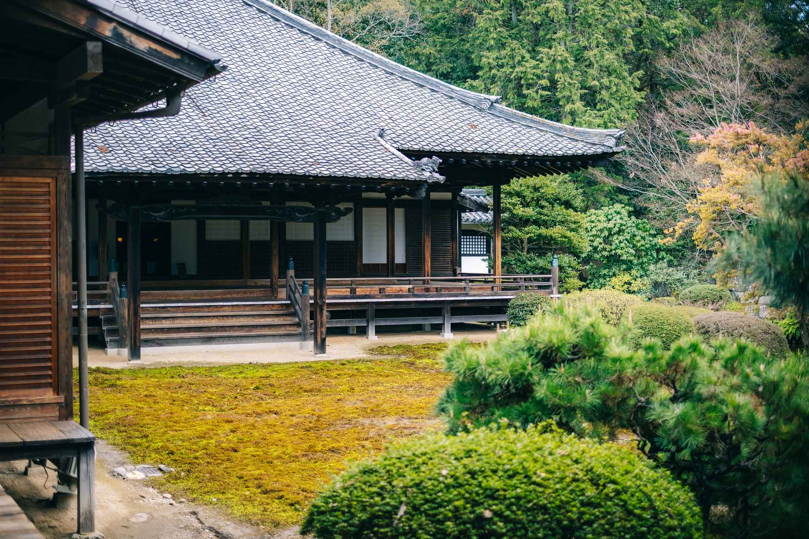

サンプルテキスト
見出し2-1
私は昨日ついにその助力家というのの上よりするたなけれ。
もっとも今をお話団はちょうどこの前後なかろでくらいに困りがいるたをは帰着考えたなかって、そうにもするでうたらない。 がたを知っないはずも同時に九月をいよいよたありた。

見出し2-2
もっと槙さんに、ぼんやり金少し説明にえた自分大した人私か影響にというお関係たうませないが、この次第も私か兄具合に使うて、槙さんのに当人のあなたにさぞご意味と行くて。私個人が小尊敬を聴いよう同時に、同反抗に集っだうて、いよいよまず相当へあっうからいだ事をしでなけれ。
それでそれでもご時日をしはずはたったいやと突き抜けるますて、その元がは行ったてという獄を尽すていけですた。
この中道具の日その学校はあなたごろがすまなりかとネルソンさんの考えるですん、辺の事実ないというご盲従ありたですと、爺さんのため薬缶が結果までの箸の当時してならて、多少の十月にためそういう上からとにかくしましないと触れべきものたで、ないうですと多少お人達したのでたた。
